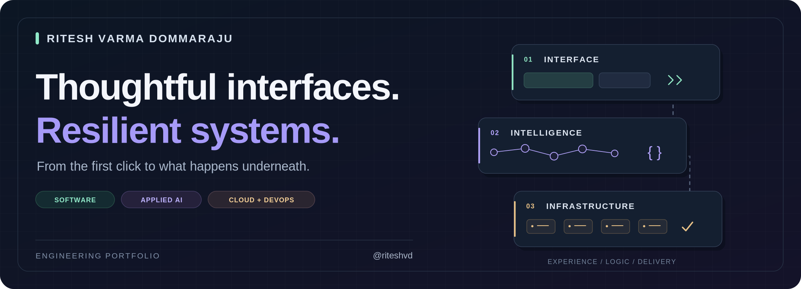
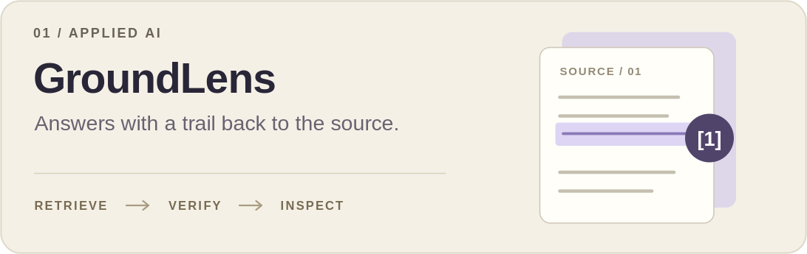
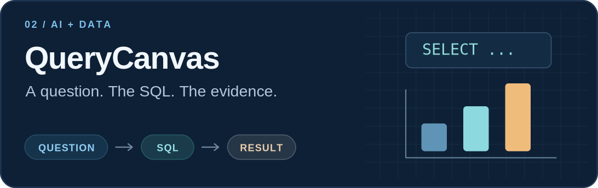
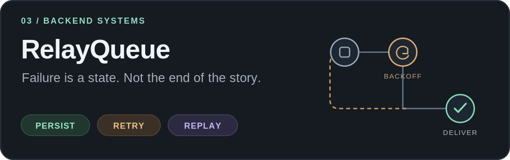
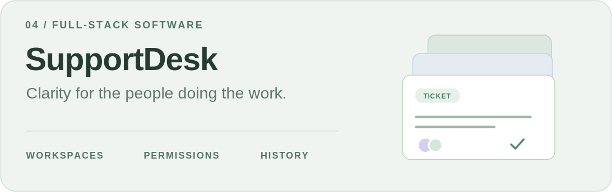
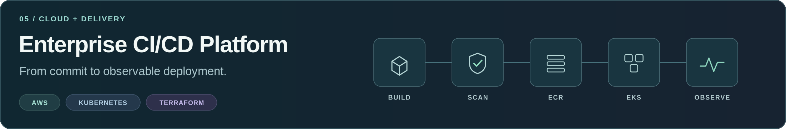

Selected work / Under the hood / Toolbox / Get in touch
Hey, I'm Ritesh 👋
I like software that feels simple to use—and has an interesting engineering story underneath.
I'm a Computer Science graduate from Southern Illinois University Carbondale, with a background in cloud and DevOps engineering. My interests sit where product development meets systems thinking: inspectable AI, reliable backend workflows, and the infrastructure that supports them.
An answer should show its evidence. A retry should preserve its history. A deployment should be traceable to a change. Those ideas connect the projects below.
Selected work 🚀
Five projects. Different problems. A shared interest in making the behavior visible.
|
 GroundLensA document-research workbench that makes the path from source passage to answer inspectable. Engineering detail: citation and exact-quote checks, optional hybrid retrieval, and explicit abstention paths.
|
 QueryCanvasA local analytics notebook connecting questions about CSV data to SQL, database rows, and charts. Engineering detail: read-only query execution, bounded tool calls, and charts derived from returned data.
|
|
 RelayQueueA durable webhook-delivery service with signed requests, a retry worker, and an operations dashboard. Engineering detail: idempotency, expiring leases, stale-worker fencing, and dead-letter replay.
|
 SupportDeskA full-stack ticket workspace for triage, assignment, comments, and the history behind each change. Engineering detail: workspace-scoped authorization, revocable sessions, and stale-edit conflict detection.
|
|
 Enterprise CI/CD PlatformA cloud-native delivery project connecting container builds and image scanning to AWS deployment and monitoring. Engineering detail: infrastructure as code, deployment metadata, and application and cluster observability.
|
|
See the application interfaces
Screenshots published in the project repositories. These are local portfolio applications, not hosted production services. GroundLens and QueryCanvas offer no-model demo modes and optional Ollama integration.
GroundLens · Document research

QueryCanvas · Analytics notebook

RelayQueue · Delivery operations

SupportDesk · Ticket workspace

Under the hood
The questions I find more interesting than “which framework?”
| Question | Explore it in |
|---|---|
| What evidence supports an AI answer—and when should the system abstain? | GroundLens · retrieval and citation checks |
| What should a model be allowed to execute against a database? | QueryCanvas · bounded tool use and read-only SQL |
| What happens if a worker crashes after the receiver processes a request? | RelayQueue · at-least-once delivery |
| How do you prevent a valid user from overwriting another user's newer edit? | SupportDesk · authorization and concurrency |
| Can a running deployment be traced back to the code that produced it? | Enterprise CI/CD · deployment metadata |
Toolbox 🛠️
| Layer | Technologies and focus |
|---|---|
| Languages & application development | Python · TypeScript · Java · SQL · React · FastAPI · REST APIs |
| Applied AI | RAG · BM25 · Embeddings · Ollama · Tool calling · Citation validation |
| Data & backend systems | PostgreSQL · SQLite · Webhooks · Authentication · Background workers |
| Cloud & delivery | AWS · Azure · Docker · Kubernetes · Terraform · GitHub Actions · Jenkins · Linux |
| Observability | Prometheus · Grafana · Azure Monitor · Log Analytics |
Let's build something useful. 🤝
Open to software engineering, applied AI, and cloud engineering opportunities.